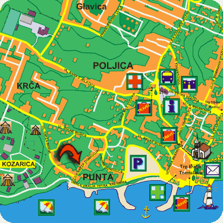

Apartments Punta
Pakoštane

Nearby destinations
| P. o N. Vransko jezero | 1 km |
| City of Biograd | 6 km |
| N. P. Kornati | 12 nm |
| P. o N. Telašćica | 17 nm |
| City of Zadar | 36 km |
| City of Šibenik | 40 km |
| N. P. Krka | 47 km |
| N. P. Paklenica | 75 km |
| N. P. Plitvička jezera | 160 km |
There are several places that have the "must visit" status: national parks, parks of nature or historical cities. Above list shows road distances to them.
Besides above destinations that are really worth visiting, you can enjoy excursions to neighboring isles or sea and lake fishing.
For those who like more active vacations there are water sports, diving, beach volleyball and all other kinds of summer sports. There is also cycle track around Vransko lake. Of course, you can always join in for football or basketball, or play tennis on nearby courts.
Placement
Pakoštane are situated in the very center of the Adriatic coast and at the unique location between the sea and the lake called Vransko jezero, on the half way between Zadar and Šibenik. You can arrive in Pakoštane by a car or bus, and if you prefer public transport you can come to Zadar and choose either railroad terminal in (35 km), ferryboat terminal (37 km) or international airport (45 km).
Easiest way to Pakoštane is by Adriatic motorway, or A-1 highway:

To find a way to our house, or to see how close it is to the beach look at this Pakoštane city map:
